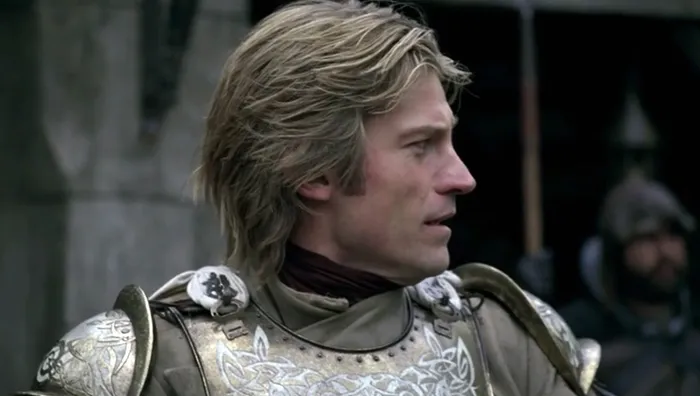

jaime

Jaime Lannister es un personaje de la saga Canción de hielo y fuego del escritor George R. R. Martin. Es representado como el hijo del astuto y calculador Tywin Lannister, Señor de Roca Casterly, contando con capítulos propios a partir del libro Tormenta de espadas.
Caballero de la Guardia Real y rompecorazones, Jaime mantiene una relación incestuosa con su hermana Cersei de la que nacieron tres hijos. Si bien en la obra surge como antagonista en los dos primeros volúmenes, a partir del tercero comienza a sufrir un proceso de redención que le hace adquirir un carácter más complejo.
En la adaptación televisiva llevada a cabo por la HBO, Juego de tronos, el personaje es interpretado por el actor danés Nikolaj Coster-Waldau.
Jaime fue el primer hijo de Lord Tywin Lannister, Señor de Roca Casterly y Guardián del Occidente, siendo hermano mellizo de Cersei Lannister. Desde niños, Jaime y Cersei fueron inseparables e incluso llegaron a ser sorprendidos experimentando con su cuerpo. Cuando su madre se enteró separó sus aposentos y les prohibió volver a hacerlo. Su madre moriría dando a luz a su hermano Tyrion que resultó nacer padeciendo enanismo. Jaime fue el único de su familia que llegó a profesar amor y afecto genuino a su hermano, a diferencia de su padre y hermana.
Siendo joven fue enviado como paje del señor de la Casa Crakehall y también luchó contra la Hermandad del Bosque Real, siendo armado caballero por un legendario espadachín de Poniente, Ser Arthur Dayne. Al regresar a casa, su hermana Cersei le dijo que su padre pretendía casarlo con Lysa Tully, así que recomendó a Jaime unirse a la Guardia Real para evitar el casamiento y así estar cerca de ella, lo que él aceptó. Sin embargo, los planes saldrían mal para ellos cuando Tywin renunció a su cargo como Mano del Rey y regresó a Roca Casterly con Cersei. Jaime se dio cuenta de que el rey Aerys II Targaryen solo le había aceptado en la Guardia Real con el objetivo de ofender a Tywin, de quien estaba profundamente celoso.
Jaime fue testigo de cómo el rey descendía más y más en la locura. Observó cómo se desencadenaba la Rebelión de Robert y fue el único Guardia Real que permaneció todo el tiempo cerca del rey Aerys, como una manera de evitar que su padre se uniera a los rebeldes. Cuando la guerra empezaba a estar perdida para los Targaryen, el rey Aerys ordenó esconder grandes cantidades de fuego valyrio debajo de Desembarco del Rey con la intención de prenderlo cuando llegaran los rebeldes. Para evitar este genocidio, Jaime asesinó al rey Aerys cuando este le pidió que matara a su padre (que estaba saqueando Desembarco del Rey) y después eliminó a todos los piromantes. Cuando Eddard Stark llegó a tomar posesión del Trono de Hierro para Robert Baratheon, se encontró a Jaime sentado en él. Lord Stark recomendó a Robert enviar a Jaime a la Guardia de la Noche por romper sus votos, pero Robert le perdonó y Jaime siguió sirviendo en la Guardia Real. A partir de ese momento sería conocido con el apodo de «Matarreyes».
Para consolidar la alianza del Trono de Hierro y la Casa Lannister, Robert se casó con Cersei. Durante los años de reinado de Robert, Jaime y Cersei mantuvieron frecuentes relaciones incestuosas que dieron tres hijos: Joffrey, Myrcella y Tommen.